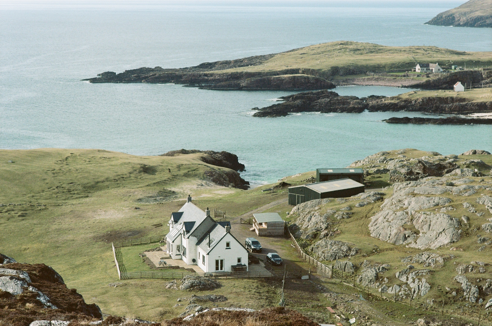
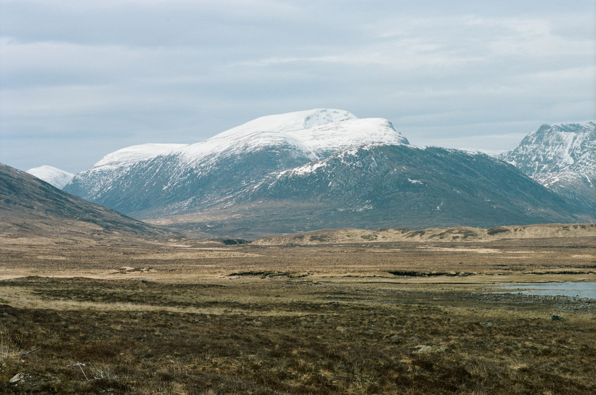
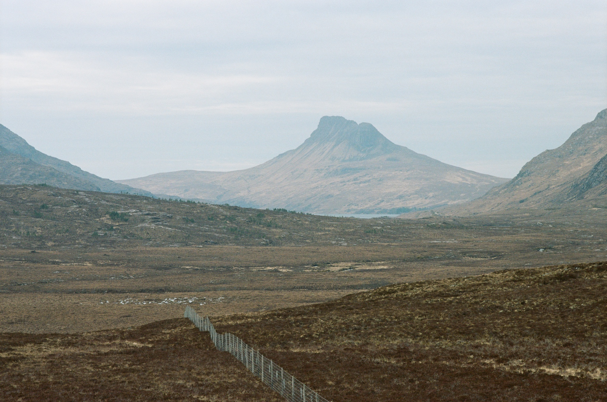
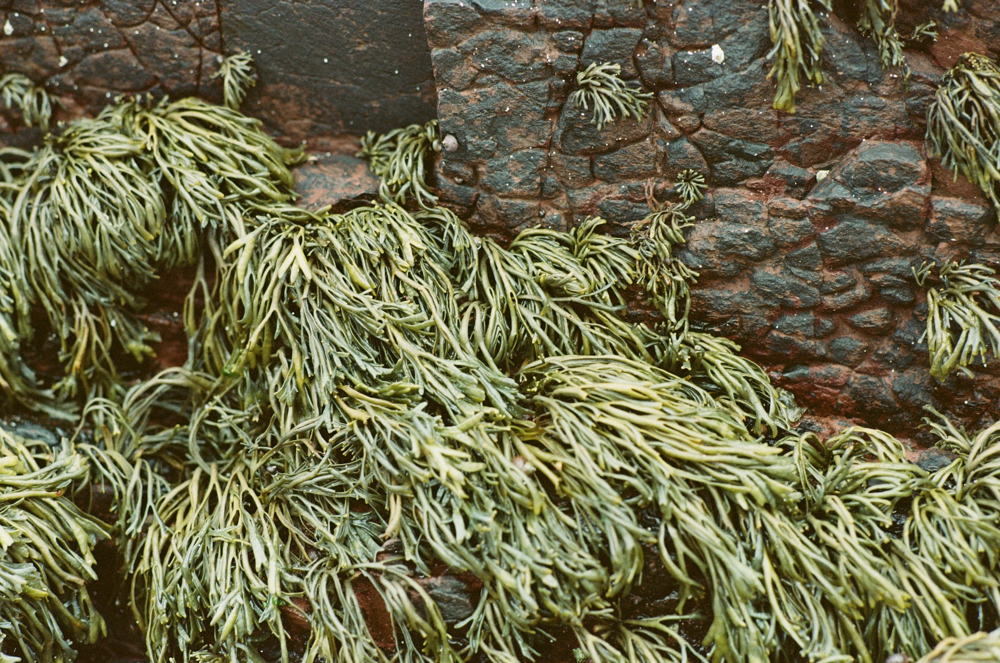
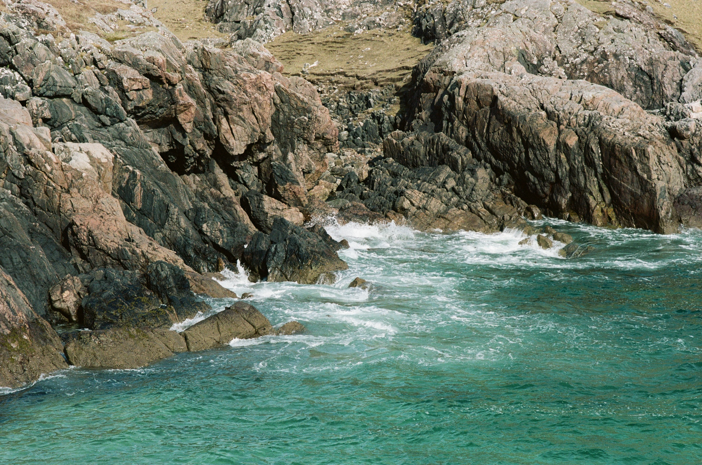

Kodak Portra 160
I loaded my Nikon FM 2567473 with a roll of Kodak Portra 160 film in February 2022. The roll was exposed with my new-to-me bokeh monster Nikon AI-s 85mm f/1.4 lens. Most of the roll was used during our Easter break to Clach Toll.
 Split Rock Croft, from the adjacent hill
On the road up (we love a road trip), there was, as always, a million amazing sights to see by the side of the road. It gets hard at times to stop safely – here is the difference between the Pacific NorthWest and Scotland, both incredible places to drive and explore but Scotland has yet to develop its tourist senses. It’s quite hostile to all forms of visitor, whether Americans, Japanese Knotweed, or Scots from the central belt. In Washington State, BC and Oregon there are plenty of places to stop and take photographs, camp, barbecue, rest and relax. In Scotland these are situated every 200 miles and have the capacity for 3 vehicles. They Scots will expect you to pay for the privilege too.
 Loch Glascharnoch from an overused lay-by on the A835 heading North
OK, I’m exaggerating a little but the difference is tangible. North Americans have a lot of space and so can afford to be generous with facilities. They also have a well developed sense of “le weekend”, living for it more than we do in the UK, where if you’re not doing a 48 hour week, you’re not even really interested in your job, are you?
 Staic Pollaidh
We had a wonderful break at Clach Toll: the split rock landmark marks one of our favourite beaches at any time of year. We were lucky enough to catch one of the last bookings available of the Air B’n’B at Split Rock Croft, before the owners, who had made themselves famous on the BBC’s “This Farming Life”, closed up and left for pastures new.
 Life
The photos might give a sense of the place, with its private beach below the famous split rock and intimate connection to the environment.
 The private beach at Split Rock Croft
I lost the notes from the final few frames and the film sat in a drawer at home until I sent it to AG for processing and scanning in August. I have not adjusted these images at all, except for resizing for the web. Click on one to get a gallery of the images on the page and try to get a sense of this wonderful place.
| Frame | Image | Aperture | Shutter | Comment |
|---|---|---|---|---|
| 1 | Loch Glascharnoch | f/11 | 1/250 | 11/4/22 on the A835 heading North |
| 2 | Loch Droma | f/11 | 1/500 | |
| 3 | Stac Pollaidh | f/11 | 1/125 | |
| 4-7 | Clachtoll beach | f/2 | 1/1000 | |
| 8 | f/8 | 1/60 | ||
| 9 | Cottage | f/4 | 1/125 | |
| 10 | Split Rock | f/8 | 1/125 | 12 April |
| 11 | Stac Pollaidh and Clach Toll | ? | ? | |
| 12 | Life | f/1.4 | 1/500 | |
| 13 | Kara | f/4 | 1/1000 | |
| 14 | More Life | f/4 | 1/125 | |
| 15 | Split Rock | f/8 | 1/125 | |
| 16 | Croft | f/11 | 1/125 | |
| 17 | Private beach | f/11 | 1/125 | afternoon 12 April |
| 18 | same | f/8 | 1/500 | |
| 19 | Split Rock | f/8 | 1/125 | Portrait |
| 20 | Split Rock | f/8 | 1/125 | Landscape |
| 21 | Split Rock | f/11 | 1/250 | |
| 22 | S R Croft | f/11 | 1/250 | |
| 23 | Suilven | f/11 | 1/250 | |
| 24 | Achmelvich and Stac Pollaidh | f/11 | 1/250 | |
| 25 | Kara | f/11 | 1/250 | |
| 26 | Split Rock | f/11 | 1/250 | Portrait |
| 27 | Jammery Culkein | f/5.6 | 1/1000 | 13th April |
| 28 | CT Private beach | f/16 | 2 sec | 6 stop Lee Little Stoppper |
| 29 | CT Private beach | f/16 | 16 sec | 10 stop Lee Big Stoppper |
| 30 | CT Private beach | f/16 | 1/60s | |
| 31 | Caves at CT Private beach | f/11 | 1/125s | |
| 32 | same | f/11 | 1/125s | |
| 33–36 | jnsq | (deleted notes) |